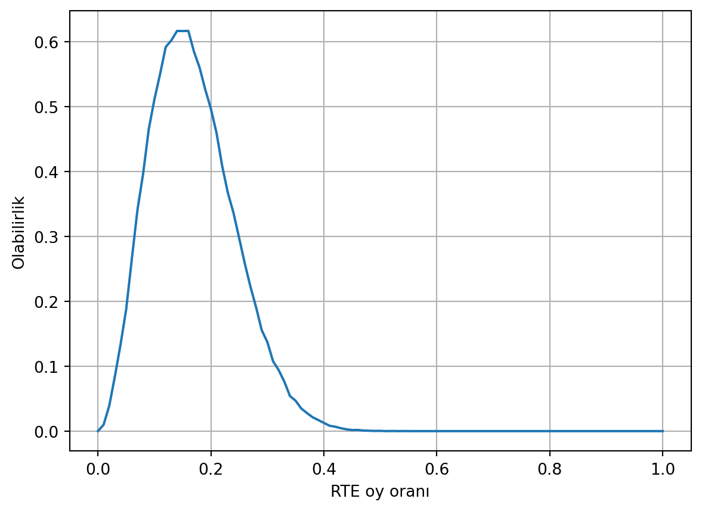
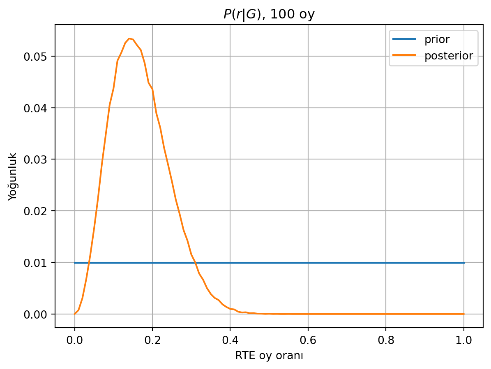
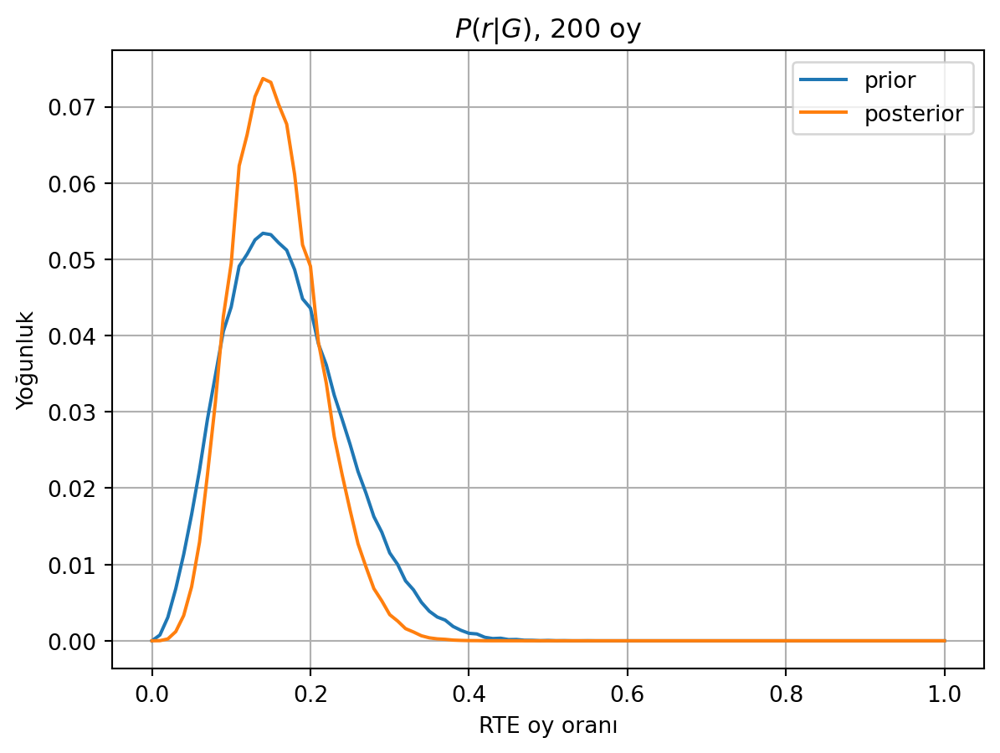

import random
import numpy as np
import matplotlib.pyplot as plt
from itertools import groupby
def oylar_üret(r, oy_sayısı):
return random.choices(("RTE","KK"), weights=[r, 1-r], k=oy_sayısı)
def en_uzun_dizi_uzunluğu(x, değer="RTE"):
return max(len(list(y)) for c,y in groupby(x) if c==değer)
def olabilirlik(r, oy_sayısı, deneme=1000, gözlenen_uzunluk=2):
sayaç = 0
for i in range(deneme):
oylar = oylar_üret(r, oy_sayısı)
try:
if en_uzun_dizi_uzunluğu(oylar) == gözlenen_uzunluk:
sayaç += 1
except ValueError: # birinci seçenek hiç gözlenmediyse
continue
return sayaç / deneme
28 Mayıs’daki cumhurbaşkanlığı seçiminde oyların sayılmasını izlerken bir şey dikkatimi çekti: Bulunduğum sandıkta Kemal Kılıçdaroğlu’na (KK) arka arkaya çok sayıda oy çıkarken, Recep Tayyip Erdoğan’a (RTE) ardışık olarak ikiden fazla oy çıkmıyordu. Yani bir veya iki oy RTE, ardından KK oyları, ardından bir veya iki RTE oyu, vs.
Bunun üzerine aklıma şu soru geldi: Sandıkta bir adayın nihai oy oranını, sayım sırasında o aday için gördüğümüz en uzun ardışık oy uzunluğuna dayanarak (oyların anlık sayısını görmediğimizi varsayarak) tahmin edebilir miyiz?
Bu anlamlı bir soru, çünkü o sandıkta adayın (bilinmeyen) oy oranı yüksekse, en uzun zincirin uzunluğu da ona göre artacaktır. Sıfıra yakın bir olasılıksa uzunluk biri aşmayacak, yüzde yüze yakınsa da sayılan oy sayısına yakın olacak.
Bu azami zincir uzunluğu kaç oyun sayıldığına da bağlı. Çok çok sayıda oy varsa, büyük sayılar yasası gereği düşük oy oranında bile herhangi bir uzunlukta zincir görmek mümkün. Tersten bakarsak, azami zincir uzunluğunu ikide sabitlemekle, oy sayısı arttıkça oy oranı tahminimiz sıfıra yaklaşmak zorunda kalacak. Sandıklarda sadece birkaç yüz oy olduğu için bu sınırlara yaklaşmayacağız tabii. Yine de bu aşırı durumları akılda tutmak sonuçlarımızı kontrol etmek için yararlı.
Sandıkta adayın oy oranına \(r\) diyelim. Bunu bilmiyoruz, kestirmek istiyoruz. Sandıkta toplam 352 oy var. Bunların tamamı açıldıktan sonra tahmin edecek bir şey kalmıyor. Belli bir sayıda, mesela 100 oy açıldıktan sonra sonucu tahmin etmek istiyoruz.
İlk aşamada, 100 oy içinde adayın arka arkaya aldığı oy zincirlerinin en uzununun 2 olması olasılığını bulalım.
Bu olasılık belki analitik yoldan bulunabilir ama ben yapamadım, o yüzden rastgele sayı üreten kısa bir program yazdım:
Birinci fonksiyon oylar_üret(r, oy_sayısı) iki adaylı bir seçimde, birinci adayın oy oranı r olacak şekilde oy_sayısı kadar rastgele oy üretir. İkinci fonksiyon ise, birincinin çıktısını alıp onun içinde ardışık değer zincirinin en büyük uzunluğunu bulur.
Örnek:
random.seed(20232023)
s = oylar_üret(r=0.2, oy_sayısı=10)
s['KK', 'KK', 'KK', 'KK', 'KK', 'KK', 'KK', 'RTE', 'RTE', 'KK']en_uzun_dizi_uzunluğu(s, "RTE")2Üçüncü fonksiyon olabilirlik, en uzun dizi uzunluğunun tam 2 olduğu durumların olasılığını, aynı oy oranı ve oy sayısıyla birçok rastgele sandık üreterek kestirir.
Örneğin, oy oranı 0.2 ise ve 10 adet oy açıldıysa, tam 2 uzunlukta en az bir dizi olması olasılığı yaklaşık 0.22 olur.
olabilirlik(0.2, oy_sayısı=10, deneme=10000, gözlenen_uzunluk=2)0.2184Tabii biz asıl oy oranını bilmiyoruz, o yüzden tersten gideceğiz: Farklı oy oranları için, 100 oy içinde tam 2 uzunlukta en az bir dizi görme olabilirliğini hesaplayacağız.
Code
r = np.linspace(0, 1, 101)
L = [olabilirlik(rr, oy_sayısı=100, deneme=10000, gözlenen_uzunluk=2) for rr in r]
plt.plot(r, L)
plt.xlabel("RTE oy oranı")
plt.ylabel("Olabilirlik")
plt.grid()
Bu sandıkta, RTE’nin oy oranının olasılık dağılımının 0.5’e doğru neredeyse sıfıra indiğini görüyoruz. Dağılımın tepesi 0.15 değerinde. Dağılım geniş bir aralığa yayılmış olduğu için sonuç hakkında net bir şey söylemek şimdilik zor olsa da, yarıyı geçme şansının çok düşük olduğu anlaşılıyor.
Bayes formülü
Bu noktada biraz duraklayıp bu problemi bir bayesçi kestirim alıştırması olarak ifade edelim. Oy oranı \(r\) ise ve \(G\) gözlemimizi (yani en uzun ardışık zincirin 2 uzunlukta olmasını) temsil ediyorsa, bu gözlem verilmiş olarak oy oranının olasılık dağılımını Bayes formülüyle ifade ederiz:
\[P(r | G) = \frac{1}{P(G)}P(G|r)P(r)\]
Önsel inanç: Burada \(P(r)\), bir şey gözlemeden önceki oy oranının dağılımıdır. Hiç bir şey gözlemediysek bunu nasıl bilebiliriz? Geçmiş tecrübelerimize dayanarak bir fikrimiz olabilir, veya her şey olabilir diyerek 0-1 arasında düzgün bir dağılım varsayabiliriz. Bu dağılıma önsel inanç (“prior belief”) denir.
Olabilirlik: \(P(G|r)\) ifadesi, belli bir oy oranı \(r\) ile, gözlemimizin olasılığını verir. Yukarıdaki olabilirlik fonksiyonu tam bunu yapar. Bu faktörün teknik adı da zaten olabilirlik (“likelihood”).
Olabilirlik fonksiyonu ile sonuçların nasıl üretildiğine dair modelimizi analizin içine katarız. Mesela burada, iki seçenekten birinin rastgele seçildiği bir Bernoulli modeli kullandık. Başka problemlerde başka modeller kullanılması gerekecektir.
Olabilirlik, aslında aradığımız şeyin tersidir: Parametrelerin bilinen değeriyle çıktılar üretir. Oysa biz bu çıktılardan yola çıkarak parametrenin ne olduğuna dair bir fikir edinmek istiyoruz. Yukarıdaki Bayes formülü bu ters problemi çözmemizi sağlar.
Normalleştirme: \(P(G)\) ifadesi bir normalleştirme sabitidir ve şu şekilde hesaplanabilir: \[P(G) = \sum_{r} P(G|r)P(r)\] Ama genellikle bu sabiti doğrudan kullanmaya gerek olmaz.
Sonsal inanç: Yukarıdaki faktörleri birleştirerek elde ettiğimiz \(P(r|G)\) olasılığına sonsal inanç (“posterior belief”) denir. Bu, önsel inancımızın eldeki veriyle güncellenerek düzeltilmiş halidir.
Düzgün önsel ile tahminler
Şimdi bunu problemimize uygulayalım. Düzgün dağılmış bir önsel alalım, yani RTE’nin bu sandıktaki oy oranının 0 ile 1 arasında eşit olasılıkla herhangi bir değerde olabileceğini düşünelim.
Code
r = np.linspace(0, 1, 101)
prior = np.ones_like(r)
prior /= sum(prior) # normalizasyon
# her oy oranı için olabilirliği hesapla
L = [olabilirlik(rr, oy_sayısı=100, deneme=10000, gözlenen_uzunluk=2) for rr in r]
# her oy oranı için sonsal olasılığı hesapla
posterior = L*prior
posterior /= sum(posterior) # normalizasyon
plt.plot(r, prior, label="prior")
plt.plot(r, posterior, label="posterior")
plt.xlabel("RTE oy oranı")
plt.ylabel("Yoğunluk")
plt.title("$P(r|G)$, 100 oy")
plt.legend()
plt.grid()
Önceki grafiğin aynısı çıktı, ki sabit bir önsel aldığımız için böyle olması gerek (olabilirliği sabit bir sayıyla çarpıyoruz)
Burada tek bir oy oranı tahmini çıkarmıyoruz. Bayesçi kestirim bize tek tahminler değil, tahmin edilecek değişken için bir olasılık dağılımı verir. İsterseniz bu dağılımdan tek tahminler (point estimate) çıkarabilirsiniz. Örneğin en yüksek olasılıklı değeri 0.15, ortalama değeri 0.17 olarak bulabiliriz.
Başka bir özet sayı, sonsal dağılımın ortasında %90 alanı kaplayan aralığın (“highest posterior density interval”) sınırlarıdır. Buna göre RTE’nin oy oranını, %90 olasılıkla (0.06, 0.29) arasında tahmin edebiliriz.
Code
print(f"En muhtemel değer: { r[np.argmax(posterior)] : .2f}")
print(f"Ortalama değer: { np.sum(r*posterior): .2f}")
print(f"%90 yoğunluk aralığı: {r[(0.05<np.cumsum(posterior))][0]} - {r[(np.cumsum(posterior)<0.95)][-1]}")En muhtemel değer: 0.14
Ortalama değer: 0.17
%90 yoğunluk aralığı: 0.06 - 0.29Güncelleme
Diyelim 100 oy daha sayıldı ve RTE’ye yine en fazla 2 uzunlukta ardışık zincirler gözlediniz. Bu yeni veriyle RTE’nin oy oranına dair inancınızı (sonsal dağılımı) güncelleyebilirsiniz.
Bayesci analizin güzel tarafı, bunu yaparken sıfırdan başlamak zorunda olmamanız. Bir önceki adımda bulduğunuz sonsal dağılımı bu sefer önsel dağılım olarak kullanıp aynı işlemi tekrarlayabilirsiniz.
Olabilirlik hesabını tekrarlamak zorunda değilsiniz, çünkü parametreler tamamen aynı olduğu için fonksiyon da aynı olacak.
Code
prior = posterior
# her oy oranı için sonsal olasılığı hesapla
posterior = L*prior
posterior /= sum(posterior) # normalizasyon
plt.plot(r, prior, label="prior")
plt.plot(r, posterior, label="posterior")
plt.xlabel("RTE oy oranı")
plt.ylabel("Yoğunluk")
plt.title("$P(r|G)$, 200 oy")
plt.legend()
plt.grid()
print(f"%90 yoğunluk aralığı: {r[(0.05<np.cumsum(posterior))][0]} - {r[(np.cumsum(posterior)<0.95)][-1]}")%90 yoğunluk aralığı: 0.08 - 0.24
Bu yeni veri ile sonsal dağılım biraz daha daraldı. Güncellemeden sonra %90 yoğunluk aralığı 0.08-0.24 oldu.
Farklı olabilirlikler
Sandıktaki oyların sayımı bittiğinde RTE’nin 352 oydan 83’ünü aldığı görüldü. Yani gerçekleşen oran 0.24 olmuş. Bu değer yukarıda bulduğumuz %90 aralığının tam sınırında. Sonsal dağılımımız olması gerekenin biraz altında kalmış görünüyor.
Bunun birkaç sebebi olabilir. Birincisi, ardışık oy dizisi uzunluğu iyi bir gösterge olmayabilir. İkincisi, benim gözlemim yanlış olabilir. Belki başlarda arka arkaya üç tane RTE oyu çıkmıştır da, ben o sırada ardışıklığa dikkat etmediğim için kaçırmış olabilirim.
Hesabı bu ihtimale göre iki aşamada tekrarlayalım. İlk 100 oy içinde en uzun RTE zinciri 3 uzunlukta olsun, ondan sonraki 100 oy içinde 2 uzunlukta olsun.
Code
prior1 = np.ones_like(r)
prior1 /= sum(prior1)
L1 = [olabilirlik(rr, oy_sayısı=100, deneme=10000, gözlenen_uzunluk=3) for rr in r]
posterior1 = L1*prior1
posterior1 /= sum(posterior1) # normalizasyon
prior2 = posterior1
L2 = [olabilirlik(rr, oy_sayısı=100, deneme=10000, gözlenen_uzunluk=2) for rr in r]
posterior2 = L2*prior2
posterior2 /= sum(posterior2) # normalizasyon
plt.plot(r, prior1, label="prior 1")
plt.plot(r, posterior1, label="posterior 1 (prior 2)")
plt.plot(r, posterior2, label="posterior 2")
plt.xlabel("RTE oy oranı")
plt.ylabel("Yoğunluk")
plt.title("$P(r|G)$")
plt.legend()
plt.grid()
print(f"%90 yoğunluk aralığı: {r[(0.05<np.cumsum(posterior2))][0]} - {r[(np.cumsum(posterior2)<0.95)][-1]}")%90 yoğunluk aralığı: 0.11 - 0.3
İlk 100 oyda üçlü diziler olduğu için, birinci sonsal dağılımımız sağa kaymış, yani yüksek oy oranlarının olasılığı artmış. Bunun sonucu olarak da 200 oy gözlendikten sonraki sonsal, bir önceki çözümümüze göre daha sağa kaymış. Böylece %90 yoğunluk aralığı daha geniş ve gerçekleşen oranı içeriyor.
Farklı önsel: Geçmiş seçimden bilgi aktarma
Son olarak, farklı bir önsel kullanmayı deneyelim.
Şimdiye kadar kullandığımız önsel, bir aday için bütün oy oranlarının eşit olasılıkta olduğunu varsayıyordu. Oysa bunun doğru olmadığını geçmiş tecrübemizden biliyoruz. Seçimin birinci turunda aynı sandıkta 357 oyun 81’i RTE’ye gittiğini gözlemiştik. Bu bilgiyle, Beta dağılımına uyan bir önsel belirleyebiliriz:
\[P(r) = C\ r^{81} (1-r)^{276}\]
Yine, ilk 100 oyda en uzun zincirin 2 uzunlukta olduğunu varsayarak sonsal hesaplayalım.
Code
prior = r**81 * (1-r)**276
prior /= sum(prior)
L = [olabilirlik(rr, oy_sayısı=100, deneme=10000, gözlenen_uzunluk=2) for rr in r]
posterior = L*prior
posterior /= sum(posterior)
plt.plot(r, prior, label="prior")
plt.plot(r, posterior, label="posterior")
plt.xlabel("RTE oy oranı")
plt.ylabel("Yoğunluk")
plt.title("$P(r|G)$, 100 oy")
plt.legend()
plt.xlim((0.1,0.4))
plt.grid()
print(f"%90 yoğunluk aralığı: {r[(0.05<np.cumsum(posterior))][0]} - {r[(np.cumsum(posterior)<0.95)][-1]}")%90 yoğunluk aralığı: 0.19 - 0.25100 oy sayımında en fazla 2 uzunlukta zincir görmekle, sonsal olasılık dağılımının hafifçe sola kaydığını, yani oy oranının daha düşük ihtimallere kaydığını görüyoruz.
Ayrıca, daha belirli (informative) bir önsel seçmekle, sonsal dağılımımızın %90 yoğunluk aralığı daraldı, yani belirsizliği daha az bir sonuç elde ettik.